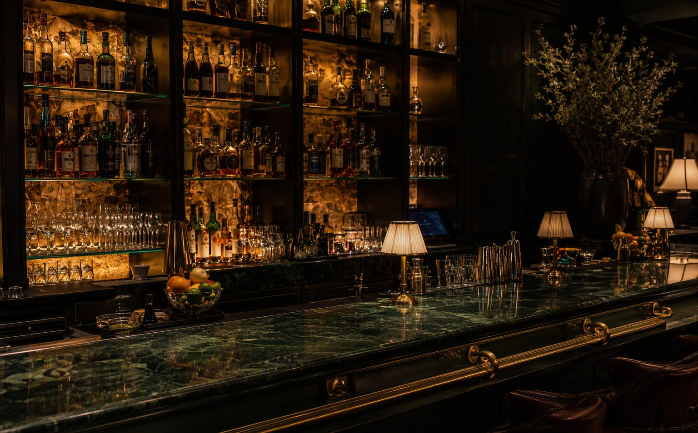
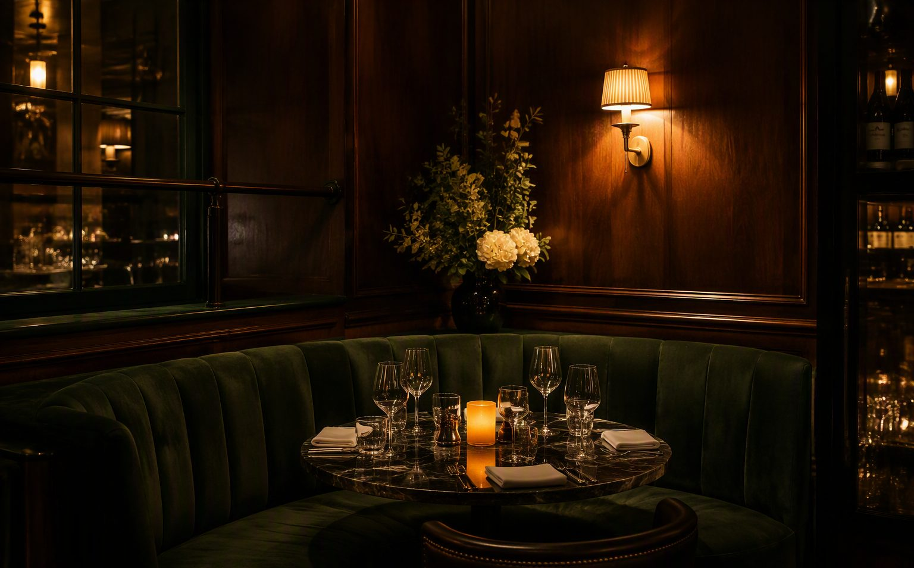

Проект / 003
Ресторант „Мерак“
Ресторант, в който светлината е съставка в менюто.
„Мерак“ е проектиран като място за дълги вечери — дълбоки зелени пейки, месингови детайли и светлина на ниво свещ, която кара времето да спира.
Тъмните дъбови пана и мраморните маси създават камерна атмосфера, а барът с подсветени амбражни рафтове е тихият център на залата.


Следващ проект